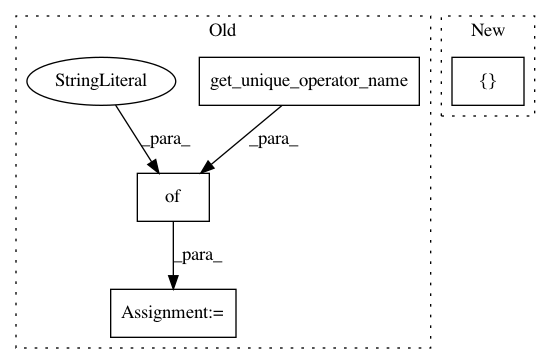

7adaaa5628c25afb20fe42f3a6ad0622b35b8767,onnxmltools/convert/coreml/operator_converters/neural_network/Upsample.py,,convert_upsample,#Any#Any#Any#,10
Before Change
def convert_upsample(scope, operator, container):
from coremltools.proto.NeuralNetwork_pb2 import UpsampleLayerParams as Params
op_type = "Upsample"
attrs = {"name": scope.get_unique_operator_name(op_type)}
params = operator.raw_operator.upsample
if params.mode == Params.NN:
attrs["mode"] = "NEAREST"
elif params.mode == Params.BILINEAR:
After Change
height_scale = float(params.scalingFactor[0])
apply_upsample(scope, operator.input_full_names, operator.output_full_names, container, operator_name=None,
mode=mode, scales=[1, 1, height_scale, width_scale])
register_converter("upsample", convert_upsample)
In pattern: SUPERPATTERN
Frequency: 3
Non-data size: 4
Instances
Project Name: onnx/onnxmltools
Commit Name: 7adaaa5628c25afb20fe42f3a6ad0622b35b8767
Time: 2018-05-17
Author: wschin@outlook.com
File Name: onnxmltools/convert/coreml/operator_converters/neural_network/Upsample.py
Class Name:
Method Name: convert_upsample
Project Name: onnx/onnxmltools
Commit Name: 7adaaa5628c25afb20fe42f3a6ad0622b35b8767
Time: 2018-05-17
Author: wschin@outlook.com
File Name: onnxmltools/convert/coreml/operator_converters/neural_network/MeanImage.py
Class Name:
Method Name: convert_preprocessing_mean_image
Project Name: onnx/onnxmltools
Commit Name: 9a24286338298ed7a75ac564054c5ab8d5580e84
Time: 2018-05-29
Author: wschin@outlook.com
File Name: onnxmltools/convert/keras/operator_converters/Dense.py
Class Name:
Method Name: convert_keras_dense